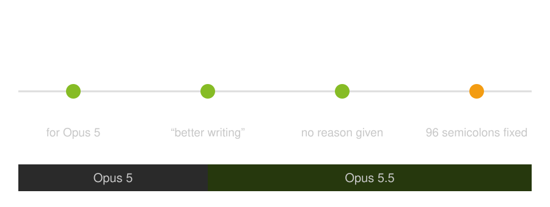
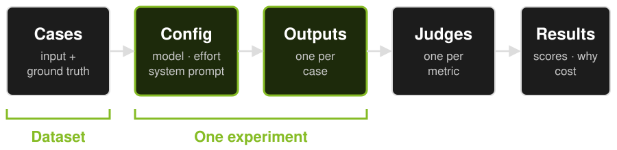
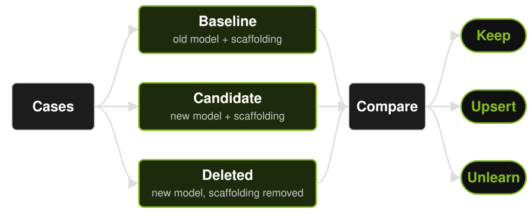
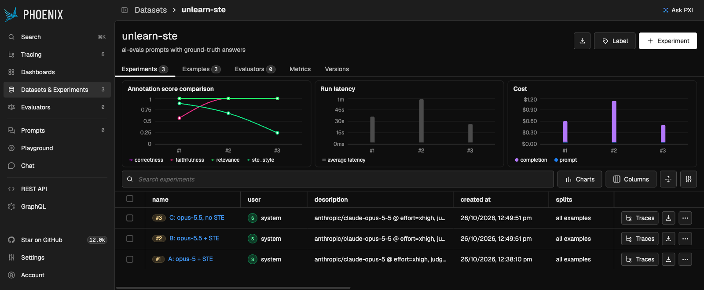

Unlearn with AI Evals
Everett Toews · CloudNative.AI Melbourne
Learn, unlearn, relearn
"The illiterate of the 21st century will not be those who cannot read and write, but those who cannot learn, unlearn, and relearn."
- Toffler, 1970
- Gerjuoy, quoted by Toffler
- "how and when"
My STE rule

Was I right?
Where scaffolding lives
- Your fingers
- Your memory files
- Your system prompt: −80%
Every generation: delete this
- "CRITICAL: You MUST"
- "Verify your work"
- "No bullet points"
- "Think carefully"
Why you can't see it
- Habit fires first
- 3 prompts feel like proof
- Losses loom larger
Evals turn weeks into days
- Weeks → days
- Anthropic: evals first
- You: vibes
Anatomy of an eval

Judges have biases
- Give it the answer
- Long ≠ good
- Pin it. Binary. Read why.
Read results honestly
- Run it again
- Cost beside score
- Evals expire too
The unlearning experiment

Should STE stay?
- A: Opus 5 + STE
- B: Opus 5.5 + STE
- C: Opus 5.5, no STE
- 3 docs tasks
→ Phoenix
Experiments, with cost

One judge explanation
C, password rotation, writing_style: fail
"Then restart the deployment again (step 4) and recheck (step 5)." It starts with an adverb and gives two actions in one instruction.
Verdict
Keep · Unlearn · Rewrite
- STE style: 6/9 vs 2/9
- Facts: no change
- Cost: 2.4× with STE
- Length: ~480 words, both
New model, new workarounds
- "thoughts? = discuss"
- Written for Opus 5
- Give it an expiry
Start with a linter
/doctor prompt-audit- Shows what looks stale
- Mine: "nothing stale"
- Then: test it
Monday
- One line
- 20 real cases
- With vs without